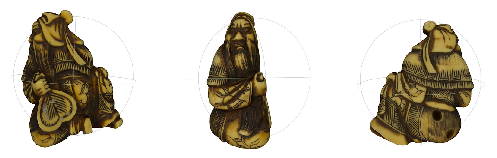

Photogrammetry: HearstCAVE 3D Reconstruction
Abstract
In this project, we aim to digitalize the collections from the Hearst Museum of Anthropology, by constructing and reproducing the 3D visualization of the exhibits and to store the models in geometric data format. In the process, we adopt photogrammetry to scan and model the exhibitions from the museum to make the models reproducible and accessiblein the digital version. The models are later built in VR application for immersive distant museum experience and to document at-risk archeological sites. To find more details, please visit HearstCave website.
Digitalized Collections


Figure: Netsuke.